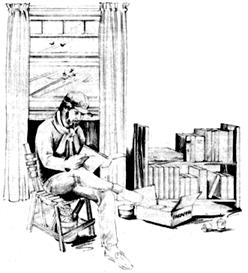
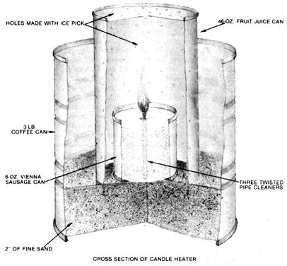

Should you find yourself in need of a bit of warmth, you might consider constructing...
Hugo I. "Doc" Wiener Last winter, while ice fishing in Wisconsin, I was trapped in my cabin by a sudden, unexpected blizzard. What really worried me was that my propane supply was running out, and a three-foot snowfall made it impossible to gather firewood.
Fortunately, I discovered that I'd stored four boxes of Parowax and three boxes of 15-hour votive candles in the shelter, so I set about experimenting with the resources on hand. To my surprise and relief, that fuel kept me from freezing while I waited out the storm. In fact, I was able to pass the time doing some writing . . . in comparative comfort! My salvation lay in magnifying the heat of a single, fat candle by enclosing it in three successive layers of metal: a Vienna sausage tin, a fruit juice can, and a large coffee can.
Since I was lucky enough to have some Dill pipe cleaners in the the cabin, I began making a candle the size of the six-ounce sausage tin by twisting three of the cleaners together to form a sturdy and dependable wick. After removing the old wick from a base candle, I heated an ice pick and gently reamed out a hole in the wax that was big enough to accept the new wick. When inserted in the candle, the twisted pipe cleaners extended 3/4" above the top of the wax and protruded below so that they could be bent into three separate legs that would keep the wick upright when the wax liquefied. This formed the central core of my candle mold; I dipped the exposed wick in hot wax to prevent its charring on first lighting, and then filled the rest of the tin with one and a half cakes of melted Parowax (and when the Parowax was gone, with two and a half votive candles).
To make the outer layer of my little stove, I used a three-pound coffee tin, with two inches of sand in the bottom to act as ballast. An inverted 46-ounce fruit juice can was just the right size to fit inside the coffee tin and to cover the smaller can containing the candle. I punched the middle can with holes every half inch to provide ventilation.
The heater burned for six to eight hours with enough intensity to warm me, provided I sat immediately over it. And it didn't give me a "hot seat" . . . but it would have if I'd been careless. Of course, since I was using a wooden chair, I covered its underside with aluminum foil held in place by thumbtacks. I was also careful to see that no flammable fabric or plastic was exposed to the heat and, because a burning candle consumes considerable oxygen, made sure there was adequate ventilation in the cabin (a precaution that was all too easy to take, under the circumstances). In addition, I kept a bucket of water handy, though sand would have served as well, in case of an accident.
Not only did this little heater keep the cold at bay, which is why I'm here to write about it, but there was an extra bonus: It could bring a pint of water to a slow boil in about 40 minutes and, in an hour, heat a quart to 160°F in a shallow pan. Hot coffee and canned soup do wonders for the morale when the wild wind's whistling outside!
Heaven forbid you should find yourself in the same fix I did, but don't fret if you do: Some empty tins and some candles can pull you through!
|
 |
 |
|